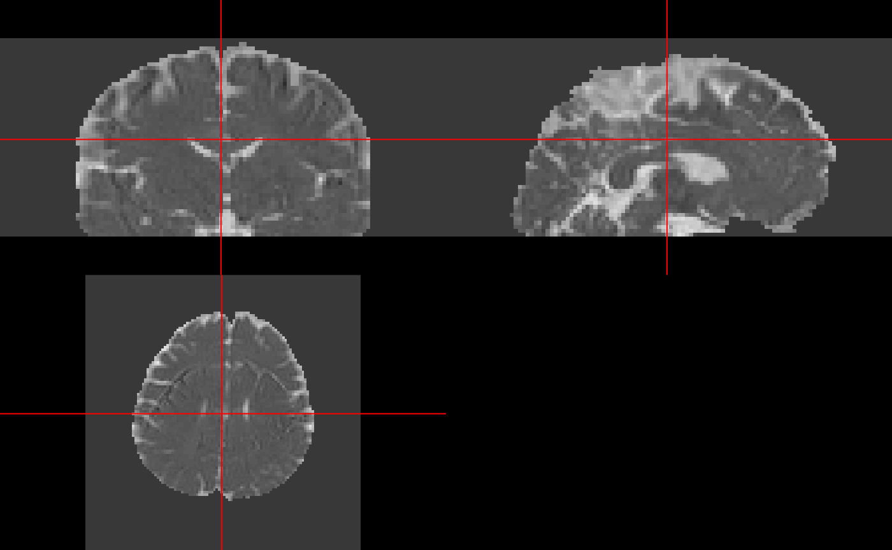

camino_dti.RmdMuch of this work has been adapted by the FSL guide for DTI reconstruction: http://camino.cs.ucl.ac.uk/index.php?n=Tutorials.DTI. We will show you a few steps that have been implemented in rcamino: camino_pointset2scheme, camino_modelfit, camino_fa, camino_md, and camino_dteig.
The data located in this tutorial is located at http://cmic.cs.ucl.ac.uk/camino//uploads/Tutorials/example_dwi.zip. It contains 3 files:
4Ddwi_b1000.nii.gz - a 4D image of the DWI data.brain_mask.nii.gz - A brain mask of the DTI datagrad_dirs.txt - a 3 column text file with the b-vectors as the first 3 columnsFirst, we download the data into a temporary directory the unzip it:
tdir = tempdir()
tfile = file.path(tdir, "example_dwi.zip")
download.file("http://cmic.cs.ucl.ac.uk/camino//uploads/Tutorials/example_dwi.zip",
destfile = tfile)
files = unzip(zipfile = tfile, exdir = tdir, overwrite = TRUE)As dtifit requires the b-values and b-vectors to be separated, and this data has b-values of \(1000\) when the b-vectors is not zero. This is very important and you must know where your b-values and b-vectors are when doing your analyses and what units they are in.
library(rcamino)
b_data_file = grep("[.]txt$", files, value = TRUE)
scheme_file = camino_pointset2scheme(infile = b_data_file,
bvalue = 1e9)/tmp/Rtmpi8CwNL/temp_libpath7ba35d68aee5/rcamino/camino/bin/pointset2scheme -inputfile '/tmp/RtmpWGhKrZ/grad_dirs.txt' -bvalue 1000000000 -outputfile /tmp/RtmpWGhKrZ/file7df513501a5b.schemeHere we ensure that the number of b-values/b-vectors is the same as the number of time points in the 4D image.
Loading required package: oro.niftioro.nifti 0.10.1[1] 33[1] 33 used (Mb) gc trigger (Mb) max used (Mb)
Ncells 722716 38.6 1254565 67.1 1254565 67.1
Vcells 1223620 9.4 118673168 905.5 123682866 943.7We will save the result in a temporary file (outfile), but also return the result as a nifti object ret, as retimg = TRUE. We will use the first volume as the reference as is the default in FSL. Note FSL is zero-indexed so the first volume is the zero-ith index:
/tmp/Rtmpi8CwNL/temp_libpath7ba35d68aee5/rcamino/camino/bin/image2voxel -inputfile '/tmp/RtmpWGhKrZ/4Ddwi_b1000.nii.gz' -outputfile '/tmp/RtmpWGhKrZ/file7df5489fe6a9.Bfloat' -outputdatatype floatNote, from here on forward we will use either the filename for the output of the eddy current correction or the eddy-current-corrected nifti object.
mask_fname = grep("mask", files, value = TRUE)
model_fname = camino_modelfit(
infile = float_fname,
scheme = scheme_file,
mask = mask_fname,
outputdatatype = "double"
)/tmp/Rtmpi8CwNL/temp_libpath7ba35d68aee5/rcamino/camino/bin/modelfit -inputfile '/tmp/RtmpWGhKrZ/file7df5489fe6a9.Bfloat' -outputfile '/tmp/RtmpWGhKrZ/file7df538fbf268.Bdouble' -inputdatatype float -schemefile /tmp/RtmpWGhKrZ/file7df513501a5b.scheme -bgmask /tmp/RtmpWGhKrZ/brain_mask.nii.gz -maskdatatype float -model dtcat '/tmp/RtmpWGhKrZ/file7df538fbf268.Bdouble' | /tmp/Rtmpi8CwNL/temp_libpath7ba35d68aee5/rcamino/camino/bin/fa -inputmodel dt -outputdatatype double > '/tmp/RtmpWGhKrZ/file7df551d8a7d1.Bdouble'library(neurobase)
fa_img_name = camino_voxel2image(infile = fa_fname,
header = img_fname,
gzip = TRUE,
components = 1)/tmp/Rtmpi8CwNL/temp_libpath7ba35d68aee5/rcamino/camino/bin/voxel2image -inputfile /tmp/RtmpWGhKrZ/file7df551d8a7d1.Bdouble -header /tmp/RtmpWGhKrZ/4Ddwi_b1000.nii.gz -outputroot /tmp/RtmpWGhKrZ/file7df5252f06dc_ -components 1 -gzip We can chain Camino commands using the magrittr pipe operation (%>%):
library(magrittr)
fa_img2 = model_fname %>%
camino_fa() %>%
camino_voxel2image(header = img_fname, gzip = TRUE, components = 1) %>%
readniicat '/tmp/RtmpWGhKrZ/file7df538fbf268.Bdouble' | /tmp/Rtmpi8CwNL/temp_libpath7ba35d68aee5/rcamino/camino/bin/fa -inputmodel dt -outputdatatype double > '/tmp/RtmpWGhKrZ/file7df560272f4b.Bdouble'/tmp/Rtmpi8CwNL/temp_libpath7ba35d68aee5/rcamino/camino/bin/voxel2image -inputfile /tmp/RtmpWGhKrZ/file7df560272f4b.Bdouble -header /tmp/RtmpWGhKrZ/4Ddwi_b1000.nii.gz -outputroot /tmp/RtmpWGhKrZ/file7df51ce1ea31_ -components 1 -gzip [1] TRUESimilar to getting FA maps, we can get mean diffusivity (MD) maps, read them into R, and visualize them using ortho2:
md_img = model_fname %>%
camino_md() %>%
camino_voxel2image(header = img_fname, gzip = TRUE, components = 1) %>%
readniicat '/tmp/RtmpWGhKrZ/file7df538fbf268.Bdouble' | /tmp/Rtmpi8CwNL/temp_libpath7ba35d68aee5/rcamino/camino/bin/md -inputmodel dt -outputdatatype double > '/tmp/RtmpWGhKrZ/file7df52fd23ec9.Bdouble'/tmp/Rtmpi8CwNL/temp_libpath7ba35d68aee5/rcamino/camino/bin/voxel2image -inputfile /tmp/RtmpWGhKrZ/file7df52fd23ec9.Bdouble -header /tmp/RtmpWGhKrZ/4Ddwi_b1000.nii.gz -outputroot /tmp/RtmpWGhKrZ/file7df57235019b_ -components 1 -gzip 
Using camino_dt2nii, we can export the diffusion tensors into NIfTI files. We see the result is the filenames of the NIfTI files, and that they all exist (otherwise there’d be an errors.)
nifti_dt = camino_dt2nii(
infile = model_fname,
inputmodel = "dt",
header = img_fname,
gzip = TRUE
)/tmp/Rtmpi8CwNL/temp_libpath7ba35d68aee5/rcamino/camino/bin/dt2nii -inputfile /tmp/RtmpWGhKrZ/file7df538fbf268.Bdouble -header /tmp/RtmpWGhKrZ/4Ddwi_b1000.nii.gz -inputmodel dt -outputroot /tmp/RtmpWGhKrZ/file7df510eaffa3_ -gzip [1] "/tmp/RtmpWGhKrZ/file7df510eaffa3_exitcode.nii.gz"
[2] "/tmp/RtmpWGhKrZ/file7df510eaffa3_lns0.nii.gz"
[3] "/tmp/RtmpWGhKrZ/file7df510eaffa3_dt.nii.gz" We can read these DT images into R again using readnii, but we must set drop_dim = FALSE for diffusion tensor images because the pixel dimensions are zero and readnii assumes you want to drop “empty” dimensions